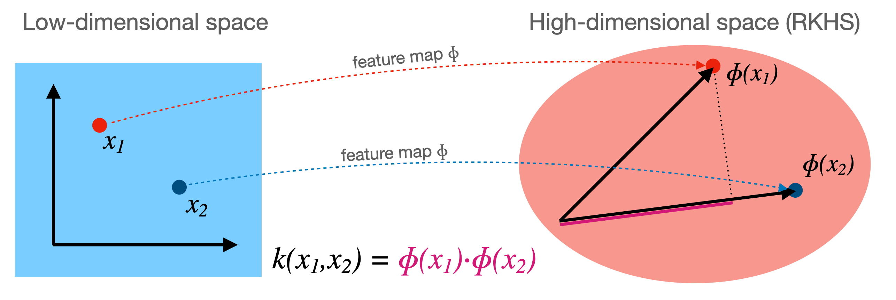

The Kernel Method (Kernel Trick)#
1. Introduction#
Many machine learning algorithms, including linear regression, logistic regression, Principal Component Analysis (PCA), and linear classifiers (like the Perceptron or linear Support Vector Machines), rely on linear relationships between data points. These algorithms perform well when the data is linearly separable or can be adequately modeled by linear functions. However, many real-world problems involve complex, non-linear data structures that linear models cannot capture effectively.
The Kernel Method (often called the Kernel Trick) provides a powerful way to apply linear algorithms to non-linear data. The core idea is to map the data into a higher-dimensional feature space (\(\mathcal{F}\)) where the data becomes linearly separable or easier to model linearly. The “trick” is that this mapping can be done implicitly using a kernel function, without ever needing to explicitly compute the coordinates of the data points in the high-dimensional (and potentially infinite-dimensional) feature space. This avoids the computational burden associated with explicit mapping.
Note: Kernel trick, which is also known as kernel method or kernel machines are a class of algorithms for pattern analysis, where involve using linear classifiers to solve nonlinear problems. These methods are different from kernelization, that is a technique for designing efficient algorithms that achieve their efficiency by a preprocessing stage in which inputs to the algorithm are replaced by a smaller input, called a “kernel”.
2. Limitations of Linear Models#
Consider a binary classification problem. A linear model attempts to find a hyperplane to separate the data points belonging to different classes.
In 2D space, a hyperplane is a line (\(\mathbf{w}^T\mathbf{x} + b = w_1 x_1 + w_2 x_2 + b = 0\)).
In 3D space, a hyperplane is a plane (\(w_1 x_1 + w_2 x_2 + w_3 x_3 + b = 0\)).
In a \(p\)-dimensional space, a hyperplane is a \((p-1)\)-dimensional subspace.
If such a separating hyperplane exists, the data is called linearly separable. However, if the data has a non-linear structure, like the classic XOR problem or concentric circles, no single hyperplane can correctly separate the classes in the original input space.
3. Feature Mapping#
To handle non-linear data, we can transform the data into a new, higher-dimensional feature space where it might become linearly separable. This is done using a mapping function, denoted by \(\phi\):
\(\mathcal{X}\): The original input space (e.g., \(\mathbb{R}^p\)).
\(\mathcal{F}\): The feature space, usually of much higher dimension than \(\mathcal{X}\) (e.g., \(\mathbb{R}^d\) where \(d \gg p\), or even infinite-dimensional).
4. The Kernel Trick#
The power of the kernel method lies in the observation that many linear algorithms can be formulated such that they only require dot products between data points (\(\mathbf{x}_i^T \mathbf{x}_j\)). Examples include the Perceptron (in its dual form), Logistic Regression (dual form), PCA, and Support Vector Machines.
If we use a feature map \(\phi\), these algorithms would need to compute dot products in the high-dimensional feature space: \(\phi(\mathbf{x}_i)^T \phi(\mathbf{x}_j)\). Calculating \(\phi(\mathbf{x})\) explicitly can be computationally very expensive, especially if \(\mathcal{F}\) has extremely high or infinite dimensions.
The kernel trick avoids this explicit computation. We define a kernel function \(K\) that computes the dot product in the feature space directly from the original input vectors:
If we can find a function \(K\) that computes this dot product efficiently without first computing \(\phi(\mathbf{x})\) and \(\phi(\mathbf{z})\), we can use it in our linear algorithm. We simply replace every occurrence of the dot product \(\mathbf{x}_i^T \mathbf{x}_j\) with the kernel function evaluation \(K(\mathbf{x}_i, \mathbf{x}_j)\).
This allows us to effectively operate in the high-dimensional feature space \(\mathcal{F}\) while only doing computations in the original input space \(\mathcal{X}\).
The dot product \(\phi(\mathbf{x}_i) \cdot \phi(\mathbf{x}_j)\) measures the similarity between points \(\mathbf{x}_i\) and \(\mathbf{x}_j\) in the feature space \(\mathcal{H}\).
Therefore, a kernel function \(k(\mathbf{x}_i, \mathbf{x}_j)\) can be thought of as a generalized similarity measure between points in the original space, implicitly corresponding to a dot product in some (potentially high-dimensional or even infinite-dimensional) feature space.
The feature space \(\mathcal{H}\) is formally known as a Reproducing Kernel Hilbert Space (RKHS).

Illustration depicting the mapping \(\phi\) and the kernel function \(k\).
5. Algorithms Using Kernels#
Any algorithm that can be expressed solely in terms of dot products between input samples can potentially be “kernelized”.
Linear Classifiers: Algorithms like the Perceptron or Logistic Regression (when expressed in their dual forms) rely on dot products. By replacing the standard dot product \(\mathbf{x}_i^T \mathbf{x}_j\) with \(K(\mathbf{x}_i, \mathbf{x}_j)\), these algorithms implicitly operate in the feature space \(\mathcal{F}\). While they find a linear separator (hyperplane) in \(\mathcal{F}\), this separator corresponds to a non-linear decision boundary in the original input space \(\mathcal{X}\).
Kernel PCA: Principal Component Analysis (PCA) finds principal components by analyzing the eigenvectors of the covariance matrix, which can be computed from dot products. Kernel PCA performs PCA in the feature space \(\mathcal{F}\) defined by the kernel \(K\), allowing it to find non-linear structures in the data.
Support Vector Machines (SVM): SVMs are perhaps the most famous example of kernelized algorithms. They find an optimal separating hyperplane, and the kernel trick allows them to find complex, non-linear decision boundaries efficiently.
Other Examples: Gaussian Processes, Ridge Regression (Kernel Ridge Regression), clustering algorithms (like Spectral Clustering) can also leverage kernels.
6. Common Kernel Functions#
Several standard kernel functions exist, each corresponding to a different feature map \(\phi\).
Linear Kernel:
\[ K(\mathbf{x}, \mathbf{z}) = \mathbf{x}^T \mathbf{z} \]This is the standard dot product. The feature map is simply the identity: \(\phi(\mathbf{x}) = \mathbf{x}\). Using this kernel recovers the original linear algorithm.
Polynomial Kernel:
\[ K(\mathbf{x}, \mathbf{z}) = (\gamma \mathbf{x}^T \mathbf{z} + c)^d \]Here, \(\gamma\), \(c \ge 0\), and \(d\) (the degree) are hyperparameters. This kernel corresponds to a feature space containing polynomial combinations of the original features up to degree \(d\). For example, if \(\mathcal{X} = \mathbb{R}^2\), \(\gamma=1, c=0, d=2\), then
\[K(\mathbf{x}, \mathbf{z}) = (\mathbf{x}^T \mathbf{z})^2 = (x_1 z_1 + x_2 z_2)^2 = x_1^2 z_1^2 + x_2^2 z_2^2 + 2 x_1 x_2 z_1 z_2\]This corresponds to the feature map \(\phi(\mathbf{x}) = (x_1^2, x_2^2, \sqrt{2} x_1 x_2)\), since \(\phi(\mathbf{x})^T \phi(\mathbf{z}) = x_1^2 z_1^2 + x_2^2 z_2^2 + 2 x_1 x_2 z_1 z_2\).
Gaussian Kernel (Radial Basis Function - RBF):
\[ K(\mathbf{x}, \mathbf{z}) = \exp\left(-\frac{\|\mathbf{x} - \mathbf{z}\|^2}{2\sigma^2}\right) = \exp(-\gamma \|\mathbf{x} - \mathbf{z}\|^2) \]where \(\gamma = 1/(2\sigma^2)\) is a hyperparameter. This is one of the most popular kernels. It corresponds to an infinite-dimensional feature space. It measures similarity based on distance; points close together in the input space have a kernel value close to 1, while points far apart have a value close to 0.
7. Mercer’s Theorem: When is K a Valid Kernel?#
Not every function \(K(\mathbf{x}, \mathbf{z})\) can be interpreted as a dot product \(\phi(\mathbf{x})^T \phi(\mathbf{z})\) in some feature space (specifically, a Hilbert space). Mercer’s Theorem provides the condition for a function to be a valid kernel.
Definition: Gram Matrix Given a dataset \(\{\mathbf{x}_1, \dots, \mathbf{x}_n\}\) and a function \(K\), the Gram matrix \(\mathbf{K}\) is an \(n \times n\) matrix where the entry \((i, j)\) is \(K(\mathbf{x}_i, \mathbf{x}_j)\):
Definition: Positive Semidefinite (PSD) Matrix A symmetric matrix \(\mathbf{K}\) is positive semidefinite if for any non-zero vector \(\mathbf{c} \in \mathbb{R}^n\):
Mercer’s Theorem (Simplified): Let \(\mathcal{X}\) be a compact subset of \(\mathbb{R}^p\). A continuous, symmetric function \(K: \mathcal{X} \times \mathcal{X} \to \mathbb{R}\) is a valid kernel (i.e., there exists a mapping \(\phi\) to a Hilbert space such that \(K(\mathbf{x}, \mathbf{z}) = \langle \phi(\mathbf{x}), \phi(\mathbf{z}) \rangle\)) if and only if the Gram matrix \(\mathbf{K}\) is positive semidefinite for any finite set of points \(\{\mathbf{x}_1, \dots, \mathbf{x}_n\}\) drawn from \(\mathcal{X}\).
Proof: If \(K\) is a kernel \(\implies\) Gram matrix is PSD Assume \(K(\mathbf{x}, \mathbf{z}) = \phi(\mathbf{x})^T \phi(\mathbf{z})\) for some mapping \(\phi\). Let \(\{\mathbf{x}_1, \dots, \mathbf{x}_n\}\) be any set of points and \(\mathbf{K}\) be the corresponding Gram matrix (\(\mathbf{K}_{ij} = \phi(\mathbf{x}_i)^T \phi(\mathbf{x}_j)\)). For any vector \(\mathbf{c} = (c_1, \dots, c_n)^T \in \mathbb{R}^n\), consider the quadratic form:
Substitute \(\mathbf{K}_{ij} = \phi(\mathbf{x}_i)^T \phi(\mathbf{x}_j)\):
Rearrange the terms:
Let \(\mathbf{v} = \sum_{i=1}^n c_i \phi(\mathbf{x}_i)\). This is a vector in the feature space \(\mathcal{F}\). The expression becomes:
Since the squared Euclidean norm (or the squared norm in the Hilbert space) of any vector is always non-negative, we have:
Thus, the Gram matrix \(\mathbf{K}\) is positive semidefinite.
The other direction of Mercer’s theorem (that any function \(K\) generating PSD Gram matrices corresponds to some feature map \(\phi\)) is more involved to prove but guarantees that functions like the Gaussian or polynomial kernels are valid.
Implications: Mercer’s theorem is fundamental because it tells us which functions \(K\) we can legally use as kernels in our algorithms. We don’t need to explicitly find \(\phi\); we just need to verify the positive semidefinite condition on \(K\). In practice, we often use well-known kernels (like linear, polynomial, RBF) that are known to satisfy Mercer’s condition. It also allows us to construct new valid kernels from existing ones (e.g., the sum or product of valid kernels is also a valid kernel).
Okay, I understand. You want to incorporate these specific concepts from Zaki’s slides into the explanation of the kernel trick. Here’s how they fit in, building upon the previous explanation:
8. Further Interpretations and Operations in Feature Space (via Kernels)#
The kernel trick not only allows us to run algorithms implicitly in the feature space \(\mathcal{F}\) but also enables us to understand and compute certain properties related to the data within that space, all without needing the explicit coordinates \(\phi(\mathbf{x})\).
Kernel Value as Similarity:
As mentioned earlier, the kernel function \(K(\mathbf{x}, \mathbf{z}) = \phi(\mathbf{x})^T \phi(\mathbf{z})\) represents the dot product between the feature vectors \(\phi(\mathbf{x})\) and \(\phi(\mathbf{z})\). In Euclidean space (and Hilbert spaces), the dot product is closely related to the angle between vectors. A larger, positive dot product implies the vectors point in similar directions, indicating higher similarity. Therefore, the kernel value \(K(\mathbf{x}, \mathbf{z})\) can be interpreted as a measure of similarity between the original points \(\mathbf{x}\) and \(\mathbf{z}\) after they have been mapped into the feature space \(\mathcal{F}\). This interpretation is fundamental to why kernels work well in algorithms like SVM (finding points similar to support vectors) or clustering (grouping similar points). Different kernels capture different notions of similarity.
Norm of a Point in Feature Space:
The squared Euclidean norm (or squared length) of a mapped point \(\phi(\mathbf{x})\) in the feature space can be computed using the kernel function. Recall that the squared norm of a vector is its dot product with itself:
Using the definition of the kernel, this is simply:
So, the diagonal elements of the Gram matrix \(\mathbf{K}\) give the squared norms of the data points in the feature space. This is useful, for instance, if we need to normalize points in \(\mathcal{F}\).
Mean in Feature Space:
Given a dataset \(\{\mathbf{x}_1, \mathbf{x}_2, ..., \mathbf{x}_n\}\), the mean of their representations in the feature space is:
While we usually cannot compute or store \(\mathbf{m}_\phi\) directly (as it lives in \(\mathcal{F}\)), we can compute its dot product with any mapped point \(\phi(\mathbf{x})\) using the kernel:
Similarly, the squared norm of the mean vector can also be computed:
This ability to work with the mean implicitly is crucial for algorithms like Kernel PCA that require centering the data in the feature space.
Distance between Points:
The distance between \(\phi(\textbf{x}_i)\) and \(\phi(\textbf{x}_{j})\) is
which implies that
Total Variance in Feature Space:
The total variance of the data in the feature space measures the spread of the points \(\phi(\mathbf{x}_i)\) around their mean \(\mathbf{m}_\phi\). It’s typically defined as the average squared distance from the mean:
We can compute this using kernels. Expanding the norm:
Now, substitute the kernel expressions we found above:
Summing over \(i\) and dividing by \(n\) gives the total variance, computable entirely from the kernel values \(K(\mathbf{x}_i, \mathbf{x}_j)\). This calculation is central to Kernel PCA.
Normalizing Data in Feature Space:
Sometimes it’s desirable to normalize the data points in the feature space. Two common types of normalization are:
Centering: This involves subtracting the mean \(\mathbf{m}_\phi\) from each point:
\(\tilde{\phi}(\mathbf{x}_i) = \phi(\mathbf{x}_i) - \mathbf{m}_\phi\).
While we don’t compute \(\tilde{\phi}(\mathbf{x}_i)\) explicitly, we can compute the kernel matrix \(\mathbf{\tilde{K}}\) corresponding to these centered points using the original kernel matrix \(\mathbf{K}\). The operation effectively centers the data within \(\mathcal{F}\). The formula for the centered kernel matrix \(\mathbf{\tilde{K}}\) where \(\tilde{K}_{ij} = \tilde{\phi}(\mathbf{x}_i)^T \tilde{\phi}(\mathbf{x}_j)\) is \(\mathbf{\tilde{K}} = \mathbf{K} - \mathbf{1}_n \mathbf{K} - \mathbf{K} \mathbf{1}_n + \mathbf{1}_n \mathbf{K} \mathbf{1}_n\), where \(\mathbf{1}_n\) is the \(n \times n\) matrix with all entries equal to \(1/n\). This is precisely the centering step used in Kernel PCA.
Unit Norm Scaling: We can scale each point \(\phi(\mathbf{x})\) to have a norm of 1 in the feature space:
\[ \phi_{norm}(\mathbf{x}) = \frac{\phi(\mathbf{x})}{\|\phi(\mathbf{x})\|} \]provided \(\|\phi(\mathbf{x})\| \neq 0\). Using \(\|\phi(\mathbf{x})\|^2 = K(\mathbf{x}, \mathbf{x})\), we have \(\|\phi(\mathbf{x})\| = \sqrt{K(\mathbf{x}, \mathbf{x})}\). The kernel function corresponding to these normalized points is:
\[ K_{norm}(\mathbf{x}, \mathbf{z}) = \phi_{norm}(\mathbf{x})^T \phi_{norm}(\mathbf{z}) = \frac{\phi(\mathbf{x})^T \phi(\mathbf{z})}{\|\phi(\mathbf{x})\| \|\phi(\mathbf{z})\|} = \frac{K(\mathbf{x}, \mathbf{z})}{\sqrt{K(\mathbf{x}, \mathbf{x})} \sqrt{K(\mathbf{z}, \mathbf{z})}} \]This is sometimes called the “cosine kernel” or “normalized kernel”. It ensures all points lie on
9. Advantages and Disadvantages of the Kernel Trick#
Advantages:
Ability to Model Non-linearity: Kernels allow linear algorithms to model complex, non-linear relationships and decision boundaries without changing the core algorithm itself.
Computational Efficiency: Avoids explicit computation of potentially very high-dimensional or infinite-dimensional feature vectors \(\phi(\mathbf{x})\). Calculations remain in the original input space dimension, depending only on the number of data points when computing the Gram matrix.
Modularity: We can easily switch between different types of non-linearities by simply changing the kernel function (e.g., from polynomial to RBF).
Works with Non-vectorial Data: Kernels can be defined for data types that are not naturally represented as fixed-size vectors, such as strings, graphs, or images, as long as a meaningful similarity function (satisfying Mercer’s condition) can be defined.
Disadvantages:
Computational Cost with Large Datasets: Computing and storing the Gram matrix \(\mathbf{K}\) takes \(O(n^2 d)\) or \(O(n^2)\) time (depending on kernel complexity) and \(O(n^2)\) space, where \(n\) is the number of samples and \(d\) is the original dimension. This becomes prohibitive for very large \(n\). Algorithms using the kernel typically have a complexity related to \(n^2\) or \(n^3\).
Choice of Kernel and Hyperparameters: The performance is highly sensitive to the choice of the kernel function (e.g., Linear, RBF, Polynomial) and its hyperparameters (e.g., \(\gamma\) for RBF, \(d\) and \(c\) for Polynomial). This often requires careful tuning using techniques like cross-validation.
Interpretability: While the decision boundary in the feature space is linear, the corresponding boundary in the original input space can be very complex and hard to interpret directly. It’s less straightforward than interpreting the coefficients of a simple linear model.
Summary#
The Kernel Trick is a powerful mathematical technique that allows linear algorithms (specifically, those relying only on dot products) to operate implicitly in a high-dimensional feature space \(\mathcal{F}\). By defining a kernel function \(K(\mathbf{x}, \mathbf{z}) = \phi(\mathbf{x})^T \phi(\mathbf{z})\), we replace dot products in the original algorithm with kernel evaluations. This avoids the potentially expensive computation of the feature map \(\phi\) while achieving the effect of mapping data to a space where it might be linearly separable or where linear patterns might emerge. Key aspects include:
Feature Mapping: Transforming data \(\mathbf{x} \in \mathcal{X}\) to \(\phi(\mathbf{x}) \in \mathcal{F}\).
Kernel Function: \(K(\mathbf{x}, \mathbf{z})\) computes the dot product in \(\mathcal{F}\) directly.
Common Kernels: Linear, Polynomial, RBF (Gaussian).
Mercer’s Theorem: Defines the condition (positive semidefinite Gram matrix) for a function to be a valid kernel.
Applications: SVM, Kernel PCA, Kernel Ridge Regression, etc.
Trade-offs: Enables non-linearity but can be computationally expensive for large datasets and requires careful kernel selection/tuning.